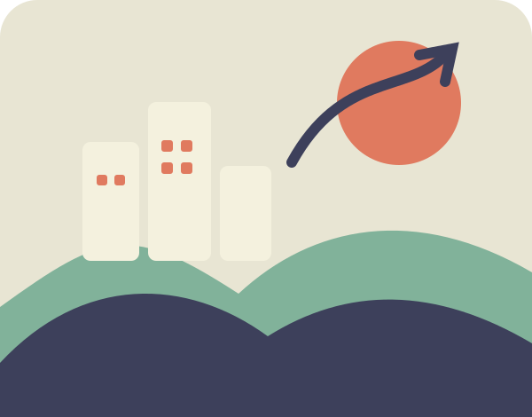
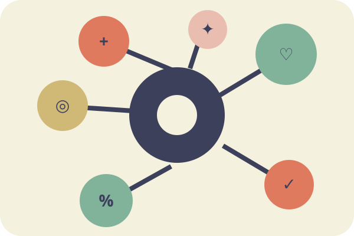

Откуда взяты данные и как их читать
Открытый источник, способ подготовки и ограничения важны не меньше красивой диаграммы. Здесь описано, что известно о показателях и что нельзя заключить из отдельных статистических связей.

World Happiness Report 2024
Основу ресурса составляет набор World Happiness Report 2024 на Kaggle ↗. В нём предусмотрены таблица рейтинга за 2024 год и более ранние годовые наблюдения. Для подготовки данных использованы открытые копии этих CSV на GitHub; побайтовое совпадение копий с архивом Kaggle отдельно не подтверждено.
Первоначальные исследования и методологические пояснения опубликованы на официальном сайте World Happiness Report ↗. По методике оценки жизни респонденты отвечают на вопрос с лестницей Кантрила от нуля до десяти. Опубликованные рейтинги и годовые значения отличаются по периоду усреднения.
Как обработаны два исходных файла
Для согласования таблиц названия стран сопоставлены по английскому ключу. В справочник добавлены русские названия и региональные группы, а пропущенные значения сохранены как null. Срез 2024 года используется для актуального опубликованного рейтинга и вкладов факторов. Годовые наблюдения 2005–2023 служат только для графиков динамики и пересчитанных исторических рейтингов.
Последовательность обработки зафиксирована в ноутбуке для Google Colab, находящемся в папке notebooks/ репозитория. Сохранены три JSON-файла: справочник стран, годовые наблюдения и рейтинг. Они загружаются в браузере через fetch(), без серверного API и базы данных.
Посмотреть ноутбук предобработки ↗
Почему данные требуют осторожности
В разные годы число стран и доступность значений меняются. Отсутствующий показатель не означает нулевую оценку, а малая разница рейтингов не обязательно является содержательно значимой. Шесть вкладов в модели отчёта 2024 года нельзя напрямую сравнивать с необработанными годовыми значениями того же названия.
Диаграмма рассеяния описывает совместное распределение признаков, но не устанавливает причинно-следственную связь. Итоги персонального калькулятора зависят от выбранных весов и диапазона нормирования. Сайт предназначен для образовательного анализа, а не для составления рейтинга стран по условиям миграции, предоставления политических оценок или рекомендаций.
Основные термины
- Оценка жизни
- Ответ человека на вопрос о собственном положении на воображаемой лестнице от 0 до 10.
- Лестница Кантрила
- Шкала субъективной оценки жизни с описанием наилучшего и наихудшего возможного положения.
- ВВП на душу населения
- Экономический показатель, характеризующий объём производства в расчёте на одного жителя.
- Социальная поддержка
- Ощущение доступности помощи со стороны окружающих при возникновении трудностей.
- Здоровая продолжительность жизни
- Оценка продолжительности жизни в хорошем состоянии здоровья на уровне населения.
- Свобода выбора
- Восприятие человеком возможностей принимать самостоятельные решения в своей жизни.
- Щедрость
- Показатель, связанный с добровольной помощью другим людям и благотворительными практиками.
- Восприятие коррупции
- Субъективная оценка распространённости коррупции в публичной и деловой сфере.
- Корреляция
- Статистическая характеристика совместного изменения двух величин, не равная доказательству причины.
- Пропущенные данные
- Значения, отсутствующие в исходном наборе и отображаемые как «нет данных».
О проекте
Ресурс разработан как учебная курсовая работа по дисциплине «WEB-дизайн» в Приднестровском государственном университете им. Т. Г. Шевченко. Студент — Канивец Егор, группа 301. Используемый технологический стек: HTML5, CSS3, JavaScript, Chart.js, JSON. Векторные иллюстрации подготовлены специально для интерфейса.
Первичный источник статистики: World Happiness Report 2024; доступ к зеркалам CSV и дополнительным материалам указан в файле data/README.md. Статус лицензирования исходного Kaggle-набора и соответствие зеркал требуют контрольной проверки до публикации окончательной версии.
Перейти от методики к исследованию
Вернитесь к каталогу и изучите страны с пониманием того, где заканчиваются данные и начинаются интерпретации.